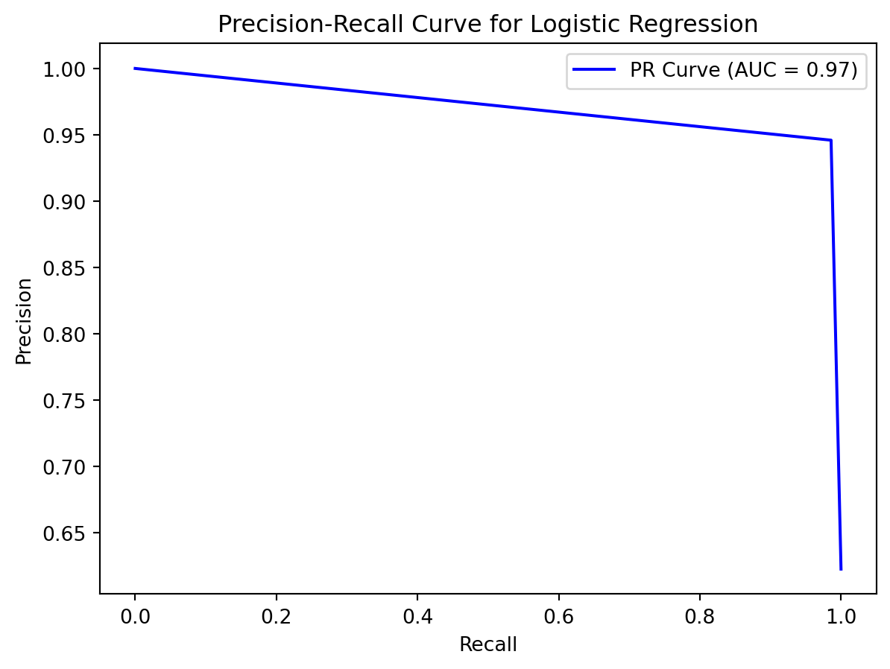
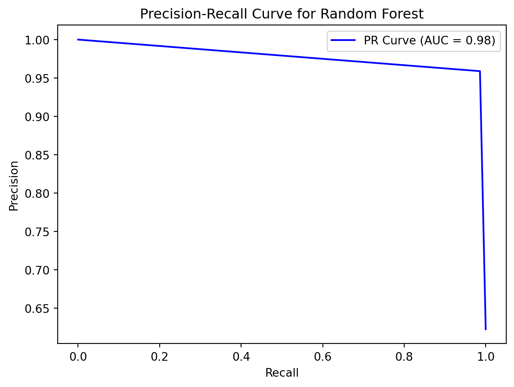

Imports
import numpy as np
import pandas as pd
import matplotlib.pyplot as pltMark Hamilton
December 1, 2023
Classification is a type of supervised machine learning that predicts the correct category of each input data point. To explore different aspects of classification, let’s try out some classification models on the breast cancer dataset from scikit-learn.
from sklearn.datasets import load_breast_cancer
cancer = load_breast_cancer()
print(f"Number of entries: {cancer.target.size}")
print(f"Unique Labels: {np.unique(cancer.target)}")
pd.DataFrame(cancer.data, columns=cancer.feature_names).head()Number of entries: 569
Unique Labels: [0 1]| mean radius | mean texture | mean perimeter | mean area | mean smoothness | mean compactness | mean concavity | mean concave points | mean symmetry | mean fractal dimension | ... | worst radius | worst texture | worst perimeter | worst area | worst smoothness | worst compactness | worst concavity | worst concave points | worst symmetry | worst fractal dimension | |
|---|---|---|---|---|---|---|---|---|---|---|---|---|---|---|---|---|---|---|---|---|---|
| 0 | 17.99 | 10.38 | 122.80 | 1001.0 | 0.11840 | 0.27760 | 0.3001 | 0.14710 | 0.2419 | 0.07871 | ... | 25.38 | 17.33 | 184.60 | 2019.0 | 0.1622 | 0.6656 | 0.7119 | 0.2654 | 0.4601 | 0.11890 |
| 1 | 20.57 | 17.77 | 132.90 | 1326.0 | 0.08474 | 0.07864 | 0.0869 | 0.07017 | 0.1812 | 0.05667 | ... | 24.99 | 23.41 | 158.80 | 1956.0 | 0.1238 | 0.1866 | 0.2416 | 0.1860 | 0.2750 | 0.08902 |
| 2 | 19.69 | 21.25 | 130.00 | 1203.0 | 0.10960 | 0.15990 | 0.1974 | 0.12790 | 0.2069 | 0.05999 | ... | 23.57 | 25.53 | 152.50 | 1709.0 | 0.1444 | 0.4245 | 0.4504 | 0.2430 | 0.3613 | 0.08758 |
| 3 | 11.42 | 20.38 | 77.58 | 386.1 | 0.14250 | 0.28390 | 0.2414 | 0.10520 | 0.2597 | 0.09744 | ... | 14.91 | 26.50 | 98.87 | 567.7 | 0.2098 | 0.8663 | 0.6869 | 0.2575 | 0.6638 | 0.17300 |
| 4 | 20.29 | 14.34 | 135.10 | 1297.0 | 0.10030 | 0.13280 | 0.1980 | 0.10430 | 0.1809 | 0.05883 | ... | 22.54 | 16.67 | 152.20 | 1575.0 | 0.1374 | 0.2050 | 0.4000 | 0.1625 | 0.2364 | 0.07678 |
5 rows × 30 columns
The breast cancer dataset contains 569 data points, each with 30 numeric features of a tumor, and the labels state whether the tumor is cancerous. Since there are only two unique labels (True/False), we will be doing binary classification.
Let’s do a train test split with a test size of 20%.
First, let’s try logistic regression. Logistic regression determines the probability that a given data point is a part of a certain class. Here, we are doing binary classification, so the model will choose the class that has a probability of over 50% as its prediction.
from sklearn.linear_model import LogisticRegression
lr = LogisticRegression(max_iter=10000)
lr.fit(X_train, y_train)
y_pred = lr.predict(X_test)
from sklearn.metrics import accuracy_score
print(f"Accuracy: {accuracy_score(y_test, y_pred)}")Accuracy: 0.956140350877193We trained the model on the training set, and used the test set to get the model’s predictions. We compared the predictions to the actual labels, and we got 95.6% accuracy. That’s pretty good, but what if most of the data belonged to one class? So for this dataset, what if most of the tumors were not cancerous? Then if the model predicted false every time, the accuracy would be very high, but the model would actually be terrible at identifying cancerous tumors. So if there is a severe class imbalance, accuracy does not tell the whole story.
This class imbalance is not too severe, so accuracy should be okay to use as a performance metric.
But let’s still discuss precision and recall, which are two performance metrics for classification that will work even when there is a class imbalance.
Precision is the percent of positive predictions made by the model that are actually positive.
\(Precision=\frac{True Positives}{True Positives + False Positives}\)
Recall is the percent of positive data points that the model correctly predicted as positive.
\(Recall=\frac{True Positives}{True Positives + False Negatives}\)
There is a tradeoff between precision and recall. If the model predicts fewer positives, precision will improve because there will be fewer false positives, but recall will decrease because there may also be fewer true positives. If the model predicts more positives, precision will decrease and recall will increase.
F1 score is a value that combines precision and recall. It is the harmonic mean of precision and recall.
from sklearn.metrics import precision_score, recall_score, f1_score
print(f"Precision: {precision_score(y_test, y_pred)}")
print(f"Recall: {recall_score(y_test, y_pred)}")
print(f"F1 Score: {f1_score(y_test, y_pred)}")Precision: 0.9459459459459459
Recall: 0.9859154929577465
F1 Score: 0.9655172413793103A Precision-Recall curve shows the tradeoff between precision and recall. A good model has both high precision and high recall, so it is better if the curve is closer to the top right. Here is the PR curve:
from sklearn.metrics import precision_recall_curve, auc
precision, recall, thresholds = precision_recall_curve(y_test, y_pred)
# Compute area under the curve (AUC)
auc_score = auc(recall, precision)
# Plot the Precision-Recall curve
plt.plot(recall, precision, label=f'PR Curve (AUC = {auc_score:.2f})', color='b')
plt.xlabel('Recall')
plt.ylabel('Precision')
plt.title('Precision-Recall Curve for Logistic Regression')
plt.legend()
plt.show()
The area under the curve (AUC) represents how good the PR curve is. If the curve is closer to the top right, the AUC will be larger. But it is important to look at the curve in addition to the AUC, because you want a fairly even tradeoff between precision and recall.
Now let’s try random forest, a different model that can be used for classification. Random forest consists of multiple decision trees. Each decision tree makes decisions based on a random subset of features from the dataset using bagging (random selection with replacement), and each decision tree votes to determine the overall model’s prediction.
from sklearn.ensemble import RandomForestClassifier
rf = RandomForestClassifier(random_state=42)
rf.fit(X_train, y_train)
y_pred = rf.predict(X_test)
accuracy = accuracy_score(y_test, y_pred)
print(f"Accuracy: {accuracy}")Accuracy: 0.9649122807017544We did not specify the number of decision trees to use, so it used 100 decision trees, which is the default value. The accuracy for this random forest model is better than that of our logistic regression model.
Here are the performance metrics and the PR curve:
precision, recall, thresholds = precision_recall_curve(y_test, y_pred)
print(f"Precision: {precision_score(y_test, y_pred)}")
print(f"Recall: {recall_score(y_test, y_pred)}")
print(f"F1 Score: {f1_score(y_test, y_pred)}")
# Compute area under the curve (AUC)
auc_score = auc(recall, precision)
# Plot the Precision-Recall curve
plt.plot(recall, precision, label=f'PR Curve (AUC = {auc_score:.2f})', color='b')
plt.xlabel('Recall')
plt.ylabel('Precision')
plt.title('Precision-Recall Curve for Random Forest')
plt.legend()
plt.show()Precision: 0.958904109589041
Recall: 0.9859154929577465
F1 Score: 0.9722222222222222
Random forest also has better precision and the same recall, so it seems that random forest is a better model to use for this dataset. However, there are various hyperparameters for both of these models. I mostly used the default hyperparameters set by scikit-learn, but if I were to test different values for the hyperparameters, the performance of the models could improve.